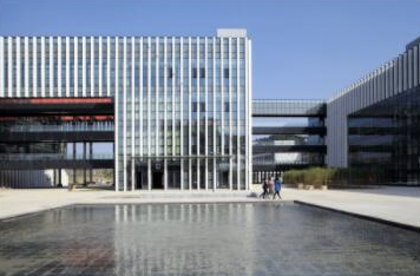

<!DOCTYPE html>
<html>
  <title>Exp1</title>
</html>

<body>
  <div class="header" style="display:flex; background-color:darkcyan; color:white; height:150px; flex-direction: column;">
    <div class="user" style="display:flex; width:100%; height:20%; justify-content: end; align-items: center;">
      <span style="margin-right: 20px">注册</span>
      <span style="margin-right: 20px">登陆</span>
    </div>
    <div class="logo" style="display:flex; width:100%; height:80%; align-items: center; margin-left: 20px; font-size: 40px;">浙江科技学院信息学院</div>
  </div>

  <div class="navi" style="display:flex; height:40px; justify-content:end; align-items:center; background-color: aquamarine;">
    <span style="margin:auto 25px auto 25px">校园简介</span>
    <span style="margin:auto 25px auto 25px">校园风光</span>
    <span style="margin:auto 25px auto 25px">专业介绍</span>
    <span style="margin:auto 25px auto 25px">人才培养</span>
    <span style="margin:auto 25px auto 25px">师资队伍</span>
    <span style="margin:auto 25px auto 25px">教学科研</span>
  </div>
  <div class="content" style="display:flex; flex-direction: column; align-items: center; background-color: lightblue">
    <div class="title" style="font-size: 30px; font-weight:bolder; margin-top: 20px;">校园简介</div>
    <div class="text" style="font-size: 15px; width: 90%; margin-top:20px; text-indent: 2em;">浙江科技学院的前身由浙江大学于1980年创办。经过近40年的建设，学校已发展成为一所具有硕土、学士学位授子权和外国留学生、港澳台学生招生权的特色鲜明的应用型省属本科高校。
        学校有两个校区，小和山校区位于杭州市西湖区西溪湿地群，校园土地面积1900佘亩，建筑面积47万平方米，交吉校区位手拥有联合国人居奖美誉的竹乡安吉，土地面积800余亩，建筑面积16.5万
        平方米。校园自然环境优美，山明水秀，湖光骂影 ，全国人大常秀会原秀员长张德江曾赞叹“真山真水，真是读书的好地方”</div>
    <div class="pic" style="margin-top: 30px; margin-bottom:20px; width: 50%;">
      
    </div>
  </div>
</body>


<style>
body {
  padding: 0px;
  margin: 0px;
  background-color: darkcyan;
}
</style>